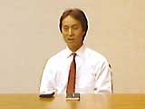

|
 まず、ポケモンにおける川口さんの役割をお聞きしたいのですが。 まず、ポケモンにおける川口さんの役割をお聞きしたいのですが。
 川口>> 現在は企画部に所属して、ポケモンのイベントの立案・実行や、映画の巻頭に流れるＣＭをプロデュースしたりしています。ポケモンに関しては最初のアイデアが出たときから縁がありましたので、現在はポケモンをより多くのかたに楽しんでもらえるようなさまざまな活動をしています。 川口>> 現在は企画部に所属して、ポケモンのイベントの立案・実行や、映画の巻頭に流れるＣＭをプロデュースしたりしています。ポケモンに関しては最初のアイデアが出たときから縁がありましたので、現在はポケモンをより多くのかたに楽しんでもらえるようなさまざまな活動をしています。
ポケモンのアイデアが生まれたのはいつごろでしょうか？
川口>> 任天堂が10年ほど前、コピーライターの糸井重里さんとエイプという会社を作ったんですよ。これは、任天堂の山内社長が「いずれはゲームのアイデアが枯渇するだろう」と予言して、ほかの業種のクリエイターを起用するために作った会社だったんです。まだファミコンがどんどん売れていた時代ですから、すでにゲーム業界の将来を見通していたということは驚くべきことですよね。
そのエイプという会社にはコピーライター、ＣＦ制作者、俳優と、さまざまなクリエイターが集まってきていたんです。そこにやってきたのが、ポケモンの原作者である田尻智くんでした。田尻くんは当時、エイプの副社長だった現クリーチャーズの石原恒和さんの友人だったんです。私の記憶では、田尻くんが企画書のようなものを持ってきたと思います。最初のアイデア書きというのが、自分が持っているアイテムやキャラクターを交換するというものだったんです。ゲームボーイとケーブルの絵が描いてあって、彼が「ケーブルを通していろいろなものが行き来するとおもしろいですよね」と言っていたのを、よく覚えています。
いまのポケモンのようなイメージやコンセプトはありませんでしたが、その最初のアイデアをその場の全員がおもしろいと思ったんですね。そこで、私が会社に企画を持ち帰り、任天堂が開発費を出すことになったんです。それがかれこれ10年前です。
その会議はソフト開発のための会議だったんですか？
川口>> いえ、そんな改まった場ではなかったんですよ。エイプという会社は、みんなが自由にやってくる、交流の場だったんです。そこへたまたま田尻くんがブラッと来て、ゲームのアイデアを持ち出した、ということなんです。
そこで川口さんが任天堂に企画を持ちかえらなければ、ポケモンは生まれなかったわけですね？
川口>> 私はただ、こういう企画でこういう人材でソフトを開発したい、と会社に持っていっただけですけどね。いわば任天堂でのプロデューサーのような役割でしょうか。
アイデアが生まれたのが10年前というと、そのあと発売までにずいぶん時間がありますね。
川口>> 当時、アイデアはありましたが、まだそれをゲームに落とし込むためのクリエイティビティが整っていなかったんだと思います。
最初の１年半くらいは田尻くんが試作などを持ってきていたんですが、そのうちパッタリととだえてしまった。当時、田尻くんもすでにゲームフリークという会社を経営していましたから、ほかの仕事もしなければならなかったんです。そこで、「しばらく制作を延期させてほしい」という申し出があったんですね。確か、保留になっていた期間が３年くらいあったと思います。
そのあと、開発が再開されたのは、ポケモンの制作プロデューサーである石原さんのおかげだと思います。石原さんは当時、色々なカードゲームに凝ってまして、確か「この要素をうまくポケモンに活かせばおもしろいものができる気がする」と言っていた気がします。そこで、最終的にプロデューサーとしてのアイデアが盛り込まれて現在の形のポケモンが仕上がったんだと思います。
石原さんはずっとポケモンのプロデュースをされていたわけですか？
川口>> そうですね。制作再開後は、ポケットモンスターという名称やその他細部の仕様が決り、そのプロデュースは石原さんのクリーチャーズという会社が受け継ぐことになったんです。そして、96年の２月にポケモンの『赤』『緑』が発売されたんです。
ポケモンのヒットの要因はいろいろあると思いますが、ひとつには石原さんが６年間ガマン強く待ったということだと思います。また、任天堂のほうも発売を待つゆとりがあったんですね。そういったさまざまな「運」もあって、ポケモンが生まれたんだと思います。
|
|
|